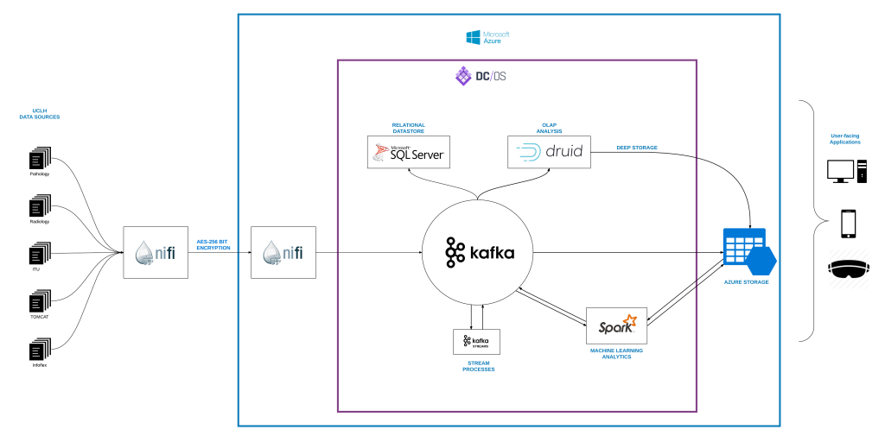

About
PEACH is a large scale open source community driven Data Science project by the Computer Science Department at University College London. The goal of Project PEACH is to provide a data science tool for medical professionals and researchers that can aid them in diagnostic and analytics processes through the use of big data, machine learning and data visualization.
Problem Statement
Currently, the NHS does not provide a suitable infrastructure to be used for activities such as capturing, transforming or transferring data across different systems, where users can use their own encrypted data flows as well as manipulate the incoming data where necessary. Because of this lack of a single secure, consistent and easy to use platform, existing applications for healthcare services are not widely used.
The vision for Project PEACH is to create such an infrastructure to support research, education and practice progression of NHS Systems for different healthcare related cases in Radiology.
Our Client
Our main client is Dr Navin Ramachandran who is a Radiology Doctor at UCLH and an honorary senior lecturer at UCL CHIME. He will oversee the PEACH project.
Our Task
High Level Goals
PEACH aims to:
- Improve the healthcare services provided by NHS from a technical standpoint
- Create a simple yet non trivial form of data flow to support PEACH’s infrastructure and applications.
- Work with the openEHR team to make sure everything is compatible.
Our Main Goal
We aim to implement the core infrastructure of the system such that various applications can connect to the servers from various domains including a central message exchange hub which controls the direction of the data flow and instructs how the data is processed or archived. Particularly, we are to build upon the largely experimental work carried out by the team previously allocated to this project. While the former team provided a conceptual solution, our goal is to implement an improved version of this goal by expanding the existing deployment.
To achieve this, we have several key tasks in particular:
- Re-deploy the PEACH infrastructure
- Improve the processing speed of system
- Create a GUI for Kafka
Our Secondary Goal
To preserve patient confidentiality and security while using patient sensitive information for research purposes, we aim to provide researchers and clinicians with a random data generator. Particularly, the tool must be able to generate new anonymized sets of data and thus enable researchers and clinicians to use this data without requiring patient consent.
Specifically, our tasks include:
- Extend current Generator by implementing the functionality to generate new data based on existing anonymized data
- Improve existing Generator GUI
The following diagram is based on the work of the team previously allocated to this project and provides a high level overview of the PEACH analytics platform. While we are to use this diagram as a conceptual guideline, our approach can be subject to changes as it may not be fully in line with the real functionality.

The Team
Sandipan Ganguly – Team Leader , Client Liason, Primary Chief Editor
Desislava Koleva – Deputy Team Leader, Primary Chief Researcher
Mengyang Wu – Technical Lead, Secondary Chief Editor